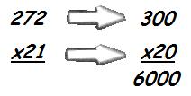

Lesson 10: Estimating the Product of 3-4 Digit Numbers by 2-3 Digit Numbers
 Explore and Discover!
Explore and Discover!
Explore and Discover!
If one kaing holds 272 atises about how many atises are there in 21 kaing?
How will you solve for the answer to the given problem ?
The phrase “about how many“ does not ask for an actual answer but an estimate. You will estimate the product to solve for the answer.
Study the solution below :
Round each of the factors to its highest place value , then multiply the rounded numbers.
Answer : There are about 6000 atises in 21 kaing.
You can find the actual product to check if the estimated product is reasonable.
Notice that the estimated product is close to the actual product.